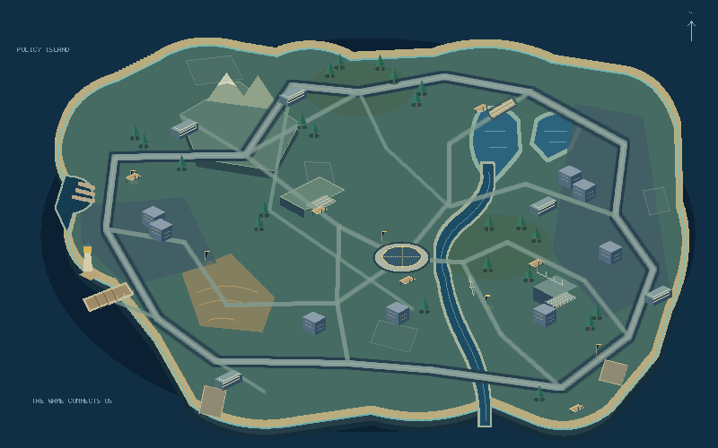
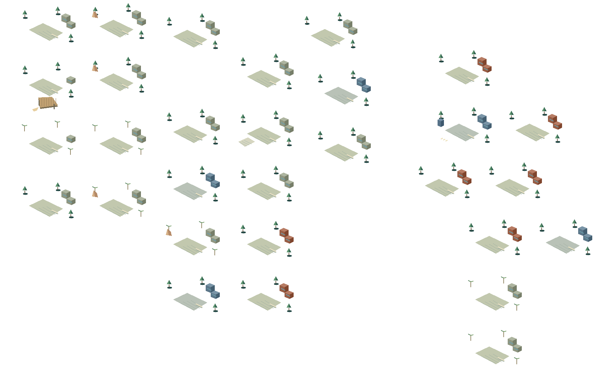
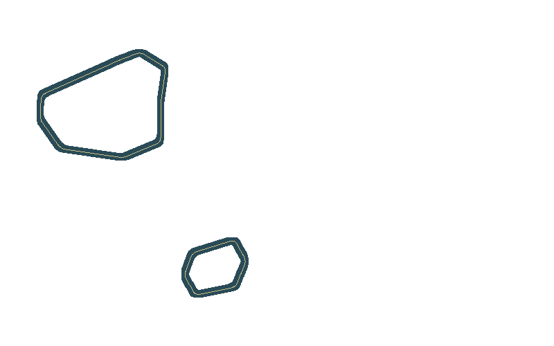
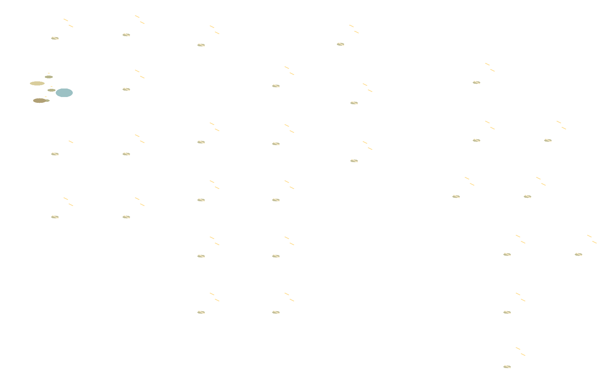

WELCOME TO YOUR BASKETBALL ISLAND
登島。讓每一球有故事。
去主場看一場好球，或約朋友在街角來場 PK。
沿著球場探索，為每一次選擇找到自己的答案。
30 NBA 主場15 公共球場一隊一島，跨海出發。




我
模擬路人・非真人玩家；灣區近景可看見散步與運球。
原創跑車插畫・四台停放、兩台巡遊；車輛與步行路網分開。
已抵達 金州勇士點隊名拉近 → 沿橋前往地標 · 回全島保留位置
已開放 30／30 支 NBA 球隊已完成 0／1 個政策挑戰
一支球隊一座島：西岸、內陸、五大湖、東岸與南端海濱由跨海主幹道連接。已開放 30／30 隊，海域預留擴建空間。此為原創群島，非實際地理地圖。
模擬賽事勇士客場打湖人・此戰僅湖人亮燈
十五場示範對戰・非 NBA 即時賽況
十五場示範對戰・非 NBA 即時賽況
挑一座球場，出發。
地圖小了？從清單直達。單機練習・非真人連線
投籃挑戰
- 開始後等倒數結束，每人有 30 秒。
- 白色游標進入金色區，按空白鍵或點「出手」。
- 每次命中得 1 分，時間到顯示結算；好友局比較雙方命中數。
音效關閉，仍會顯示命中與終場文字。
按開始後，將游標停在金色區。
準備好再出手。
- 剩餘時間
- 30.0秒
- 命中
- 0
- 出手
- 0
不計分試玩｜先試一次操作，不會送出成績
可練習 12 秒，也可直接跳過。